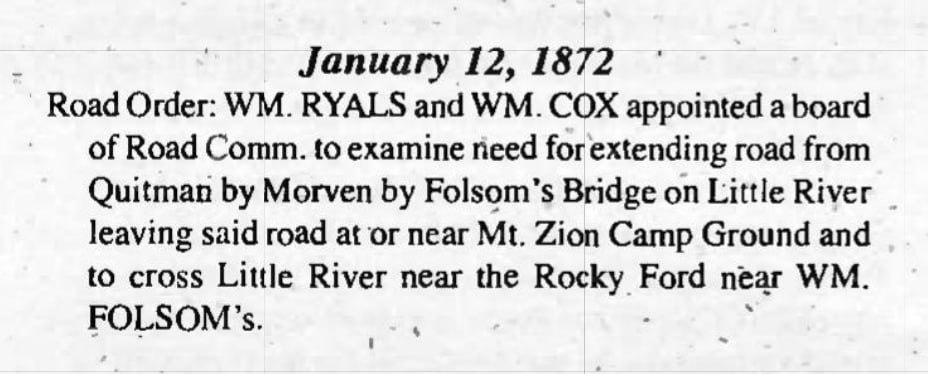
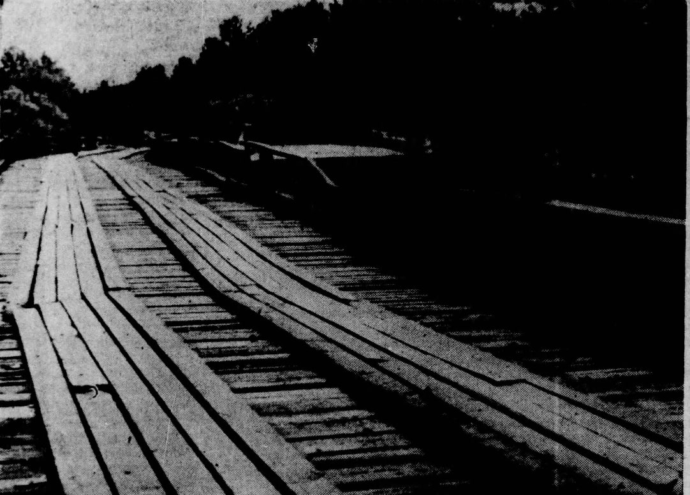
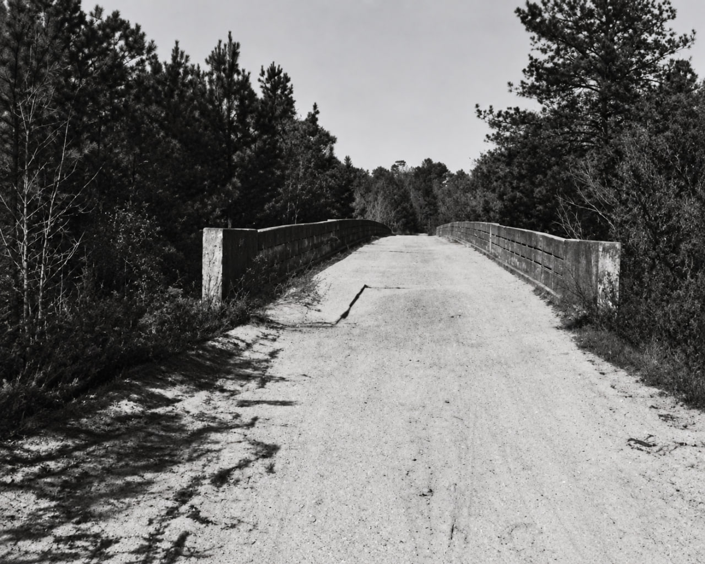

Rock Bridge at Little River
Under review: Several details on this page conflict with inspected source records. Use the citations with caution while corrections are prepared.
Research dossier
Prepared August 26, 2026
Scope and conclusion
Rock Bridge was the road crossing over Little River directly north of Barney, Georgia, on the old Adel-Quitman Road. The crossing lay at the Brooks County boundary with Berrien County before 1918 and with Cook County afterward. The 1908 Brooks County map places it in the Land Lot 494 reach, and modern USGS and BridgeHunter coordinates agree on the crossing reach.[1-2,22]
The bridge name developed before 1900, more than twenty years before the Luten Bridge Company project. An 1885 account called the location “The Rocks” and described a nearby natural bridge formed by a large flat rock. An 1896 Berrien County road notice then called the crossing “The Rocks bridge, on Little river.” The exact modern form “Rock bridge” is documented by June 1902. The pre-Luten predecessor's construction date, builder, design, and material remain unknown.[3,43-44]
Brooks and Cook counties replaced an older bridge in 1923-1925. Luten Bridge Company received the $69,627 contract in November 1923. Contemporary reports and the State Highway Department describe a long, mixed crossing with steel trusses, concrete girders, raised approaches, and smaller drainage openings. The bridge proper was largely built during 1924, and Brooks County accepted the work by May 1925.[4-8]
The main river bridge was only one part of the crossing. A separate concrete bridge over a Brooks-side slough broke in two during high water in January 1925 while the main bridge survived. A temporary wooden bridge later crossed a Brooks-side slough and is the strong probable successor at that opening. The Brooks County approaches washed away again in August 1928, but the main Rock Bridge span was reported open. Later reports must distinguish damage to the main span from damage to the slough bridge or approaches.[9-13]
The old route became State Route 76, but much of it remained unpaved into the late 1940s. Project S-356(1) replaced the crossing with a 1,473-foot bridge on a new alignment southeast and downstream in 1949-1950. The abandoned Luten-era remains are therefore not the present GA 76 crossing.[14-18]
Two earlier records do not belong in Rock Bridge's direct history. The May 1904 newspaper item reads "Burney bridge", not Barney or Rock Bridge. Burney Bridge was a different crossing. The 1872 road-order abstract names Rocky Ford near William Folsom, not Rock Bridge, and does not establish Rock Bridge as the crossing of a road to William Folsom Sr.[19-21]

Evidence grades
This dossier uses four grades:
- Verified: stated in a direct original or contemporary record, or fixed by several independent records without a material conflict.
- Strong probable: several specific facts agree, but no source states the full conclusion.
- Possible: plausible, but the evidence is incomplete or does not distinguish alternatives.
- Unresolved: the evidence does not yet support a choice.
Place, road, and jurisdiction
The Land Lot 494 crossing
R. D. Flippen's 1908 map of Brooks County is the best early geographic control. It draws a public road north from Barney and prints "Rock Br." where that road crosses Little River at the county line. The label sits in the Land Lot 494 reach. The South Georgia Railroad is drawn separately, so Rock Bridge cannot reasonably be confused with the railroad trestle.[1]
USGS station 02318330, "LITTLE RIVER AT OLD GA 76, NEAR GREGGS, GA", is at 31.0496343, -83.4993292. BridgeHunter places the abandoned bridge at 31.049622, -83.499318. These positions agree on the crossing reach but should not be treated as survey-level proof of the centerline of every bridge that stood there.[2,22]
Little River formed the county boundary. Before Cook County was created in 1918, the bridge connected Brooks and Berrien counties. After 1918 it connected Brooks and Cook. That history explains why older evidence may be filed under Berrien and later contracts under Cook.[23]
The Adel-Quitman road
The 1908 map shows a continuous public-road corridor from Quitman through Morven and Barney to Rock Bridge, but it does not print a road name on the Brooks side. The original 1910 census sheet for John H. Ryalls's Berrien County neighborhood supplies the earliest exact road name found in this research. The street column reads "Adel & Quitman Road".[1,24]
A March 1921 highway article said Brooks County's proposed northern outlet had originally been planned through Morven, Barney, and "Rock Bridge at Little River". Officials were then expected to favor a Pavo route as the outlet for "local and through traffic" because it would avoid eighteen miles of paving. The first official state-aid route list is consistent with that choice: Route 35 ran from Pavo through Quitman to the Florida line, while no numbered route passed through Morven and Barney. This verifies the early route pattern, but the original designation order is still needed to prove that Route 35 resulted from that exact contest.[25,42]
The 1923-1924 engineering report identifies the bridge project as "Brooks-Cook / Adel-Quitman". Newspapers describe the same work as the Little River bridge on the Quitman-Adel road. In January 1927, the State Highway Board added the Quitman-Adel route to the state-aid system, subject to county work and right-of-way requirements. By 1932 the road was State Route 76.[7,14,26]
The corridor developed in stages. Brooks County authorized the Quitman-Morven segment in 1859, but that does not prove that a through road already continued to Barney and Rock Bridge. The legal act, if any, that joined the older road segments into a continuous Adel-Quitman Road has not been located.[27]
Modern names such as Old Quitman Road and old GA 76 accurately describe the abandoned twentieth-century alignment. They should not be projected backward as nineteenth-century road names.[2,22]
The name before the Luten bridge
The earliest located newspaper wording that applies a Rocks-derived name to the crossing is a Berrien County road notice published May 22, 1896. It described a proposed public road beginning at “The Rocks bridge, on Little river,” running toward Parrish's mill through the lands of Thomas Maloy, A. K. Folsom, Elam C. Sutton, J. M. Whitehurst, W. D. Whitehurst, M. H. Whitehurst, W. J. and L. G. McKinney, Augustus Whitehurst, and Henry Castleberry, and joining the Valdosta road near the mill. The notice shows that the crossing already served as a named road endpoint before 1900.[44]
The earliest exact modern form found is an Adel News community item from June 20, 1902. A River Bend correspondent announced a picnic at "Rock bridge". The page is damaged, but the place-name and local setting are readable.[3]
Together, the notices show the progression from “The Rocks bridge” in 1896 to “Rock bridge” in 1902. The name appeared on the official county map in 1908 and in the 1921 highway discussion.[1,3,25,44]
M. M. Folsom's 1885 “Down the River” account called the location “The Rocks.” He described a small stream entering Little River just above it and a natural bridge across that stream formed by a large, flat rock. Phillip Williams's annotated edition identifies “The Rocks” with the old State Route 76 crossing. This is the strongest located explanation for the later Rock Bridge name: the crossing was associated with “The Rocks” and a nearby natural rock bridge. It does not establish that the road bridge itself was built of stone.[43]
Parrish's mill
Later notices identify the road notice's destination as H. J. Parrish's water mill. In 1895, William Morris and Needham Purvis installed a new water wheel there for residents of the River Bend community. Road notices in 1897 placed H. J. Parrish's mill near Indian Trail Creek and described a road from the mill past the homes of E. D. Walker and H. J. Parrish to the Nashville-Adel road. In 1908, advertisements placed H. J. Parrish's mill pond about four miles east of Adel.[45]
These records place the mill in the River Bend area east of Adel and show that the 1896 road from The Rocks bridge was intended to join the Valdosta road near it. They do not establish the exact mill site. A precise location should remain unresolved until a deed, plat, road map, mill return, or other original land record ties the mill to a specific parcel.
The predecessor bridge
A bridge stood at the crossing before the Luten contract. The clearest proof is the November 23, 1923 contract announcement. It said the new steel-and-concrete bridge would "take the place of the present structure", which was "said to be in bad condition".[4]
The source does not describe the older bridge's material, dimensions, or builder. The 1902 place-name and the 1908 map prove that a named crossing existed, but they do not date the structure shown or establish that one unchanged bridge remained in use through 1923. Repairs or intermediate replacements may have occurred without appearing in the surviving online record.
The pre-Luten predecessor's date, design, builder, and exact footprint are therefore unresolved. Brooks, Berrien, and Cook road or commissioner minutes remain the best likely sources.
The Luten project, 1923-1925
Planning and funding
Brooks and Cook commissioners agreed in May 1923 to construct a modern cement bridge at the county line. Plans were to come from the State Highway Department, and the proposed roadway was sixteen feet wide. In September, the project appeared endangered because Cook County had not secured its share of the money. An October joint resolution estimated a $75,000 cost and assigned 27 percent to Cook County and 73 percent to Brooks County.[5-6]
The problem was resolved. On November 22, 1923, the counties awarded Luten Bridge Company of Atlanta a $69,627 contract. More than fifty bidders reportedly attended. The contract covered the bridge, approaches, grading, and steel work. State Highway Engineer Furlow had prepared plans and specifications.[4]
Construction
Work began by January 1924. Contemporary reports described a project roughly 1,000 feet long, including the main bridge and smaller drainage crossings. The approaches were to be raised above high water. On the Cook County side, the road was straightened to remove a bad curve.[8]
Frank Johns of Barney was injured on April 5 while working for the contractor. He fell about 12 to 15 feet from a temporary bridge. The source places the accident at the Cook-Brooks Little River project but does not establish that the temporary structure was the old bridge being replaced. It may have been construction staging.[28]
By mid-April, concrete had been placed and the bridge was being built high. In August, reports said the bridge proper was nearly finished while substantial turnpike and approach work remained. A May 1925 article said Brooks County had accepted the Little River bridge and placed the county's share of the cost at $49,000.[8,29]
What the engineering record says
The State Highway Department's 1923-1924 report lists the work under "Bridge Engineering Done by State Highway Department for Counties, for Bridges on County Roads". The scanned table reads:
Brooks-Cook | Adel-Quitman | 932 [feet] | 18 [feet wide] | Steel Truss & Con. Girder
An asterisk says that it was let to Luten Bridge Company on Luten plans. The table treats it as county-road bridge work, not construction of a new state highway.[7]
The official 1932 Cook County highway map labels the crossing "700' Conc. Bridge (Luten Design)". BridgeHunter describes the surviving portion as nine 45-foot closed-spandrel arches and gives a total length of 450 feet. Nine spans of 45 feet total 405 feet, so the BridgeHunter entry is internally inconsistent unless its total includes other work.[14,22]
The figures should be reported separately. The 932-foot state project length, the approximate 1,000-foot newspaper description, the 700-foot concrete label, and the shorter surviving arch section may refer to different portions of a long river, slough, trestle, and approach complex. Only the original Luten plans or final measurements can reconcile the parts.
BridgeHunter dates the bridge to 1925. That date compresses a project contracted in 1923, substantially built in 1924, and accepted by Brooks County in 1925. The contemporary sequence is more precise.[4,8,22,29]
A crossing complex, not one span
Contemporary reports distinguish the main river bridge from a separate bridge over a slough on the Brooks County approach. That distinction explains why accounts can report a failed bridge or approach while the main Rock Bridge remained open. The newspapers do not give a precise location for the slough bridge.
Floods, failures, and the wooden bypass
January 1925
High water reached the crossing before Brooks County formally accepted the Luten project. An Adel dispatch published January 24 and 25 said that a concrete bridge over a slough beyond the main Cook-Brooks bridge broke in two. The report explicitly said the "big bridge" was not injured and the roads remained passable.[9-10]
This is the strongest dated evidence for the concrete failure later served by a wooden bypass. It also shows why the bridge complex should not be described as a single structure.
August 1928
The Brooks County approaches to Rock Bridge washed away during a severe flood in August 1928. A later report, datelined August 18, said "the rock bridge, at Little River, eighteen miles north of Quitman" was open.[11-12]
Official weather records show that two tropical systems contributed to the event. The Fort Pierce hurricane brought the first exceptional rainfall to south Georgia on August 10-12. A second tropical storm made landfall near Apalachicola on August 14 and brought another heavy pulse over wet ground. Quitman recorded 18.27 inches from August 5 through 18. USGS estimates a historic Little River peak of 39,000 cubic feet per second at old GA 76 on August 18.[2,30-32]
The available record does not support blaming the washout solely on the Fort Pierce hurricane. The two storms occurred close together, and the Weather Bureau said they produced unusually high streams over much of the same region.[30-32]
The August reports document additional approach damage. They do not say that the concrete slough bridge first failed in 1928, and they do not say that the main Rock Bridge span failed.
The wooden bridge by 1930
On March 2, 1930, Wendell Wynne of Adel drowned after his car left "the temporary wooden bridge over the slough" beyond Little River on the Brooks County side. This fixes a wooden structure in the same relative position as the concrete slough bridge that broke in 1925.[13]
If the 1930 wooden slough bridge was the successor at the 1925 opening, its installation date is bounded after January 24, 1925 and by March 2, 1930. That identity is strong probable, not explicit. A January 1928 report says wooden bridges on the route had been put in good condition, but it does not identify them closely enough to prove that the slough bypass was already present.[33]
The 1947 unsafe-bridge investigation
An Atlanta Journal investigation in September 1947 called the crossing the "prize unsafe bridge" on the main highway between Quitman and Adel. It described a rickety wooden bridge alongside concrete wreckage, reached by a sharp turn, and attributed six deaths to the arrangement.[15]

Wendell Wynne is a strong probable match for the article's unnamed young motorist. The wooden slough bridge, submerged car, and single drowning broadly agree. The direction of travel appears only in the 1947 account and cannot be compared with the 1930 report. The article also referred to a truckload of Black workmen but did not give an explicit number, names, or date.
The strongest located candidate is a January 1934 wreck involving an Epsy Construction Company truck carrying paving workers between Adel and Barney. Jimmy Young and Mose Cotton, both Black, died. Ten Black workers and the white driver were injured, for eleven injured people in all. The truck landed in underbrush on the stream bank, not in the water. The contemporary reports do not securely identify Rock Bridge or the slough. If this was the event remembered in 1947, the contemporary record contradicts the later version's implication that a truckload went into the river. If it was a different event, the workmen incident and its toll remain unresolved.[34]
April 1948 flood of record
USGS estimates that Little River at old GA 76 reached 43,000 cubic feet per second on April 3, 1948, at elevation 164.90 feet. The wooden bypass was already documented in 1947, so the 1948 flood did not cause the original concrete slough failure.[2]
Road improvement and State Route 76
The old route did not become a modern paved highway all at once. Quitman began paving the southern Morven road segment in 1919-1920. The Rock Bridge route lost the first state-highway contest in 1921. The counties built the Luten bridge in 1923-1925, and the State Highway Board added Quitman-Adel to the state-aid system in January 1927.[25-26,35]
The 1932 Cook County highway map carries SR 76 from Adel to the old crossing. State Aid Project 1016-B improved 7.676 Cook County miles with gravel, chert, and selected material in 1933-1934. That was not concrete or asphalt paving. A 1935 article still said the Adel-Quitman road lacked pavement except for a small Brooks County stretch.[14,36-37]
The 1939 Brooks County highway map continued to send SR 76 north from Barney to Rock Bridge. The old alignment remained the highway through the early postwar period.[38]
Relocation in 1949-1950
The September 1947 investigation said the Adel-Quitman road was still unpaved. Brooks and Cook had graded their sections, but rain was damaging the work. Governor M. E. Thompson wrote later that year that the Little River bridge contract should be let by March 1948 and that the route from Adel through Barney and Morven to Quitman would be completed after July 1, 1948.[15,39]
Test-pile work and contract activity followed in 1948. Newspapers identified W. J. Tidwell as apparent low bidder at $217,915 and later placed Tidwell Construction Company equipment and materials at the site. Construction was underway by early 1949.[16]
The State Highway Department's 1949-1950 report gives the most detailed official account. Project S-356(1) built a new bridge over Little River on "a relocation". The old bridge was narrow and had insufficient waterway. Its facility consisted of a narrow concrete bridge and a timber approach that had replaced concrete destroyed by flood.[17]

The new bridge was 1,473 feet long. It had a 24-foot roadway, two 2-foot safety curbs, and H-15 design loading. Steel beams with concrete floors formed the spans. Steel piles supported the approach spans, and concrete piers supported the river-channel spans.[17]
This project bypassed the old Rock Bridge crossing. It did not widen or rebuild the Luten bridge in place. Full-resolution USDA aerials support the distinction. Cook County frames JP-2D-045 and 046, flown February 24, 1947, show the older floodplain approach. Brooks County frames JC-7K-120 and 121, flown March 19, 1952, show a separate, straighter corridor after construction. Exact deck identification still requires formal georeferencing.[18]
Road contracts in 1949-1950 laid or began the remaining paving between Adel, Barney, Morven, and Quitman. Work was nearing completion in September 1950, but an October report said portions of the new Brooks County pavement had failed before acceptance and would be rebuilt. Final acceptance of the repaired work remains unresolved. The modern GA 76 corridor took shape through the bridge relocation and companion road work, not through a single 1920s paving project.[16]
Later bridge history and the abandoned remains
GDOT's 1989 plans identify the S-356(1) bridge by structure number 027-00076-030.21E. Replacement project produced the present bridge. FHWA inventory data date that bridge to 1990. The 1992 inventory gives a length of 408.4 metres and a 12.2-metre roadway at the Cook-Brooks county line. The 2024 file still gives 1990 as the construction year. The 1989 plans cite the 1948 USGS flood elevation of 164.9 feet.[40]
The Luten-era Rock Bridge remains abandoned on Old Quitman Road. BridgeHunter describes a closed-spandrel concrete arch structure at the old crossing and identifies Luten Bridge Company, but its dimensions and 1925 date are derivative and partly inconsistent. They are useful modern observations, not corrections to the contemporary project record.[22]
A WWALS account and photographs use the local name "Stone Bridge" and place it about a mile upstream from the current GA 76 access. The page says there is no public land access. That is modern local information, not historical proof of the original name or construction.[41]
BridgeHunter and WWALS report that the USGS Geographic Names Information System carried "Rock Bridge (historical)" for this location. BridgeHunter notes some uncertainty over whether that name refers to the surviving Luten-era bridge or an earlier bridge. The historical evidence resolves the broader issue: the Rock Bridge place-name predates Luten. A current GNIS record was not retrieved in this pass, so the intended physical structure remains unresolved.[22,41]
No inspected National Register of Historic Places or Historic American Engineering Record entry was located for Rock Bridge. The bridge should not be described as listed or formally documented by either program without a specific record number.
Crossings and records that must remain separate
| Crossing or lead | Finding |
|---|---|
| Rocky Ford near William Folsom in the 1872 abstract | Separate. The abstract says Rocky Ford, not Rock Bridge. The original minute image has not been located. |
| Road to William Folsom Sr. | No located original record identifies Rock Bridge as its Little River crossing. Do not merge it with the Adel-Quitman corridor. |
| Burney Bridge | Separate crossing northwest of Rock Bridge. The 1904 newspaper page reads Burney, not Barney. |
| W. H. Sharpe's 1866 road to an unnamed Little River bridge | Endpoint unresolved, but current location work points away from Rock Bridge. |
| Tucker Bridge | Separate crossing much farther south. |
| Folsom Bridge | Separate crossing near Foster on the later SR 122 corridor. |
| Miller Bridge and Joyce's Ferry | Separate downstream crossing on the Hahira-Morven road. |
| South Georgia Railroad bridge | Separate from the road bridge. The 1908 map draws both. |
| Concrete slough bridge and wooden bypass | Separate component on the Brooks County approach, identified by contemporary reports but not fixed to a precise coordinate. |
| 1949-1950 GA 76 bridge | Separate relocated crossing downstream and southeast of the abandoned Rock Bridge alignment. |
What is established
- “The Rocks bridge” was a local bridge name by May 1896; the exact modern form “Rock bridge” is documented by June 1902.
- The 1908 Brooks map places Rock Bridge at the public-road crossing north of Barney in the Land Lot 494 reach.
- The Adel-Quitman Road name appears on an original 1910 census sheet.
- A predecessor bridge existed before the Luten project and was in bad condition in 1923.
- Brooks and Cook awarded Luten Bridge Company a $69,627 contract on November 22, 1923.
- Although the State Highway Department supplied the engineering, its 1923-1924 report officially classified the project as bridge work for counties on a county road.
- The state engineering table describes 932 feet, an 18-foot roadway, and steel truss and concrete girder work.
- Construction proceeded through 1924, and Brooks County accepted the bridge by May 1925.
- A separate concrete slough bridge failed in January 1925 while the main bridge survived.
- Rock Bridge's Brooks approaches washed away during the two-storm August 1928 flood, but the main bridge remained open.
- A temporary wooden slough bridge was in use by March 1930 and remained dangerous in 1947.
- The old route became SR 76, but full modern paving came much later.
- SR 76 through Barney was still being paved in 1949-1950. At Little River, Project S-356(1) built a 1,473-foot bridge on a relocated crossing and improved the roadway alignment, bypassing old Rock Bridge.
- GDOT replaced the S-356(1) bridge under a later project, and FHWA dates the present bridge to 1990.
What remains unresolved
- The construction date, builder, material, design, and exact footprint of the pre-Luten predecessor.
- The legal act that completed the continuous road between the older Quitman-Morven segment and the crossing north of Barney.
- The exact division of the Luten project among steel trusses, concrete girders or arches, trestles, slough openings, and approaches.
- The relationship among the 932-foot project length, 700-foot concrete label, and surviving arch dimensions.
- Whether the 1924 straightening shifted the bridge footprint or only the Cook County approach.
- The exact installation date of the wooden slough bypass.
- The full identity and circumstances of every death attributed to the unsafe bypass in the 1947 article.
- The letting, opening, completion, and acceptance dates for Project S-356(1).
- Which physical bridge the GNIS compiler intended when recording "Rock Bridge (historical)".
- The exact site of H. J. Parrish's mill and mill pond east of Adel.
Best next archival targets
- Brooks County Ordinary and County Purposes minutes, bridge warrants, and payment books for 1900-1925.
- Berrien County road and bridge records before Cook County's creation in 1918.
- Cook County commissioner minutes and warrants for 1918-1925.
- State Highway Engineer Furlow's 1923 site survey, Luten contract, plans, final estimate, and acceptance documents.
- State Aid Project 1016-B plans and correspondence.
- The full S-356(1) job record, as-built plans, final inspection, and acceptance record, using later bridge number
027-00076-030.21Eas a retrieval key. - USGS station 02318330 support files for the 1928 and 1948 historic peaks, including high-water marks, bridge-opening sketches, cross sections, computations, photographs, and correspondence.
- Undigitized Adel News, Quitman Free Press, and county-board legal notices for bridge construction, repairs, and the wooden bypass installation.
Source notes
- R. D. Flippen and Hudgins Company, Map of Brooks County, Georgia (1908), Georgia Archives item
cmf:285: https://vault.georgiaarchives.org/digital/collection/cmf/id/285/ - USGS, station 02318330 site inventory and annual peaks: https://waterservices.usgs.gov/nwis/site/?format=rdb&sites=02318330&siteOutput=expanded and https://nwis.waterdata.usgs.gov/nwis/peak?site_no=02318330&agency_cd=USGS&format=rdb
- Adel News, June 20, 1902, p. 4: https://gahistoricnewspapers.galileo.usg.edu/lccn/sn88054040/1902-06-20/ed-1/seq-4/
- Macon Daily Telegraph, November 23, 1923, p. 2, Newspapers.com image
825953142: https://www.newspapers.com/image/825953142/ - Atlanta Journal, May 3, 1923, p. 9, image
970898580: https://www.newspapers.com/image/970898580/ - Macon Telegraph, September 29, 1923, p. 8, image
826198123: https://www.newspapers.com/image/826198123/ - Sixth Annual Report of the State Highway Engineer (1923-1924), p. 109: https://dlg.galileo.usg.edu/data/dlg/ggpd/pdfs/dlg_ggpd_y-ga-bt700-b-pa1-b1924.pdf
- Macon Telegraph, January 16, April 13, and August 10, 1924, images
826001725,826035330, and826010702: https://www.newspapers.com/image/826001725/, https://www.newspapers.com/image/826035330/, and https://www.newspapers.com/image/826010702/ - Valdosta Daily Times, January 24, 1925, p. 1, image
889457830: https://www.newspapers.com/image/889457830/ - Macon Telegraph, January 25, 1925, p. 16, image
826126260: https://www.newspapers.com/image/826126260/ - Macon Telegraph, August 16, 1928, p. 15, image
826209320: https://www.newspapers.com/image/826209320/ - Atlanta Journal, August 19, 1928, p. 12, image
971605506: https://www.newspapers.com/image/971605506/ 13825984598`: https://www.newspapers.com/image/825984598/ - State Highway Board of Georgia, Cook County Highway Map (1932, corrected 1933), Georgia Archives item
cmf:127: https://vault.georgiaarchives.org/digital/collection/cmf/id/127/ - "Prize Unsafe Bridge on Main Highway Between Quitman and Adel", Atlanta Journal, September 1, 1947, p. 21, image
976018999: https://www.newspapers.com/image/976018999/ 16890315730and890595052890090102890238525,890267871, and890272858852811412`: https://www.newspapers.com/image/852811412/ - Twenty-Third Report, State Highway Department of Georgia (1949-1950), pp. 78-79: https://dlg.galileo.usg.edu/data/dlg/ggpd/pdfs/dlg_ggpd_y-ga-bt700-b-pa1-b1949-h50.pdf
- USDA aerial photograph collections, Cook and Brooks counties, 1947 and 1952: https://dlg.usg.edu/record/gyca_gaphind_cook-1947 and https://dlg.usg.edu/record/gyca_gaphind_brooks-1952
- Adel News, May 13, 1904, p. 3: https://gahistoricnewspapers.galileo.usg.edu/lccn/sn88054040/1904-05-13/ed-1/seq-3/
- Tifton Gazette, May 25, 1894, p. 2, road from Burney Bridge: https://gahistoricnewspapers.galileo.usg.edu/lccn/sn89053120/1894-05-25/ed-1/seq-2/; Tifton Gazette, June 5, 1903, p. 4, rebuilding agreement: https://gahistoricnewspapers.galileo.usg.edu/lccn/sn89053120/1903-06-05/ed-1/seq-4/
- Brooks County Genealogical Society road-order abstract, January 12, 1872, raw page 014. The original minute image has not been located.
- BridgeHunter, "Rock Bridge", record 80926 and API data: https://www.bridgehunter.com/bridges/80926 and https://server.bridgehunter.com/bridges/id/80926
- Jurisdiction sequence from two public original sources: the 1908 official Brooks County map shows Berrien County across Little River at the crossing [source 1], while the 1923-1924 official bridge table identifies the later project as "Brooks-Cook" [source 7].
- 1910 U.S. census, Berrien County, ED 16, John H. Ryalls neighborhood, Ancestry collection 7884, record 3170733, image
31111_4327471-00932: https://www.ancestry.com/imageviewer/collections/7884/images/31111_4327471-00932?usePUB=true&usePUBJs=true&pId=3170733 - Macon Daily Telegraph, March 24, 1921, p823529033`: https://www.newspapers.com/image/823529033/
- Fitzgerald Leader Enterprise and Press, January 6, 1927, p. 8: https://gahistoricnewspapers.galileo.usg.edu/lccn/sn89053308/1927-01-06/ed-1/seq-8/
- Folks Huxford, The History of Brooks County, Georgia, 1858-1948, pp. 69-71, catalog record: https://hdl.handle.net/2027/uva.x000002988
- Macon Telegraph, April 6, 1924, image
826034708; GHN reprint in the Danielsville Monitor, April 11, 1924, p. 2: https://gahistoricnewspapers.galileo.usg.edu/lccn/sn89053317/1924-04-11/ed-1/seq-2/ - Macon Telegraph, May 17, 1925, p. 23, image
825993810: https://www.newspapers.com/image/825993810/ - NOAA/NHC HURDAT2, storms
AL011928andAL021928: https://www.nhc.noaa.gov/data/hurdat/hurdat2-1851-2024-040425.txt - U.S. Weather Bureau, "The Weather Elements", Monthly Weather Review 56 (August 1928), pp. 329-330, and R. Hanson Weightman, "West Indian Hurricanes of August, 1928", Monthly Weather Review 56 (October 1928), pp. 411-412: https://archive.org/details/sim_monthly-weather-review_1928-10_56_10
- NCEI daily summaries, Quitman 2 NW, August 5-18, 1928: https://www.ncei.noaa.gov/access/services/data/v1?dataset=daily-summaries&stations=USC00097276&startDate=1928-08-05&endDate=1928-08-18&format=json&units=standard&includeAttributes=true&includeStationName=true 33971593919`: https://www.newspapers.com/image/971593919/
- Valdosta Daily Times, February 1, 2, and 5, 1934, images
890574073,890574081, and890574099503315: https://www.ancestry.com/search/collections/5426/records/503315 - Post-Search Light, December 18, 1919, p. 18: https://gahistoricnewspapers.galileo.usg.edu/lccn/sn88054150/1919-12-18/ed-1/seq-18/; February 12, 1920, p. 5: https://gahistoricnewspapers.galileo.usg.edu/lccn/sn88054150/1920-02-12/ed-1/seq-5/
- Annual Report of the State Highway Board of Georgia, 1933-1934, p. 243: https://dlg.galileo.usg.edu/data/dlg/ggpd/pdfs/dlg_ggpd_y-ga-bt700-b-pa1-b1933-h34.pdf
- Macon Telegraph, July 28, 1935, p. 7, image
852953851: https://www.newspapers.com/image/852953851/ - Georgia Division of Highway Planning, Brooks County, Georgia (1939), DLG item
gyca_mmap_hwy-0022: https://dlg.usg.edu/record/gyca_mmap_hwy-0022 - Governor M. E. Thompson letter reported in the Valdosta Daily Times, November 6, 1947, p. 17, image
890281223: https://www.newspapers.com/image/890281223/ - GDOT, 1989 bridge plans, project, existing bridge
027-00076-030.21E: https://mydocs.dot.ga.gov/info/designplans06/DesignPlansLibrary/421680_0000001_CST.PDF and https://mydocs.dot.ga.gov/info/designplans06/DesignPlansLibrary/421680_0000008_CST.PDF; FHWA National Bridge Inventory, Georgia 1992 and 2024 files: https://www.fhwa.dot.gov/bridge/nbi/1992/delimited/GA92.txt and https://www.fhwa.dot.gov/bridge/nbi/2024/delimited/GA24.txt - WWALS, "Stone Bridge, Little River", modern account and photographs, November 4, 2018: https://wwals.net/2018/11/04/stone-bridge-little-river-by-dan-phillips-2016-08-01/
- Second Annual Report of the Highway Department of Georgia (1919-1920), official state-aid route descriptions: https://dlg.usg.edu/record/dlg_ggpd_y-ga-bt700-b-pa1-b1920/fulltext.text
- M. M. Folsom, “Down the River,” Valdosta Times (1885), reproduced and annotated by Phillip Williams, “M. M. Folsom's Down The River,” Wiregrass Region Digital History Project, published June 4, 2022, updated June 6, 2022: https://sites.google.com/view/wiregrassrdhp/down-the-river. Folsom called the location “The Rocks” and described a nearby natural bridge formed by a large, flat rock; Williams identifies the place with the old State Route 76 crossing.
- “Citation,” Tifton Gazette, May 22, 1896, p. 6, Berrien County road notice beginning at “The Rocks bridge, on Little river”: https://gahistoricnewspapers.galileo.usg.edu/lccn/sn89053120/1896-05-22/ed-1/seq-6/. The notice was repeated May 29, 1896, p. 8.
- Parrish's mill reports and notices, Tifton Gazette, March 1 and 22, 1895; March 26, April 2, 9, and 23, 1897; and June 12 and 19, 1908. The 1895 reports identify a water mill serving River Bend; the 1897 notices name H. J. Parrish and Indian Trail Creek; the 1908 advertisements place the mill pond about four miles east of Adel.